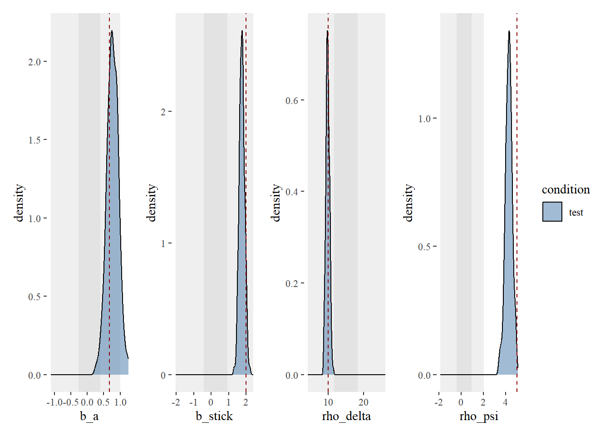
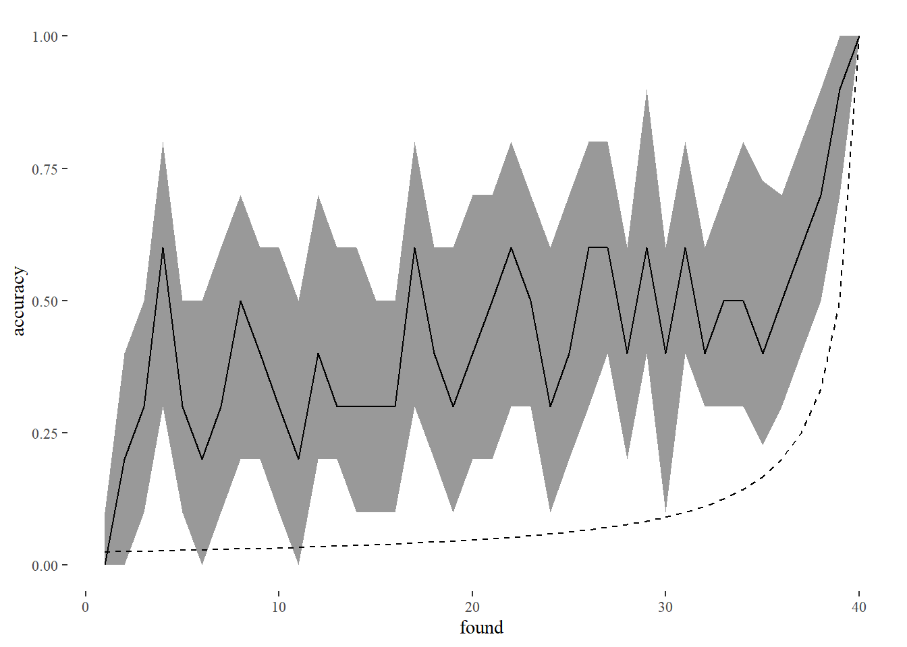
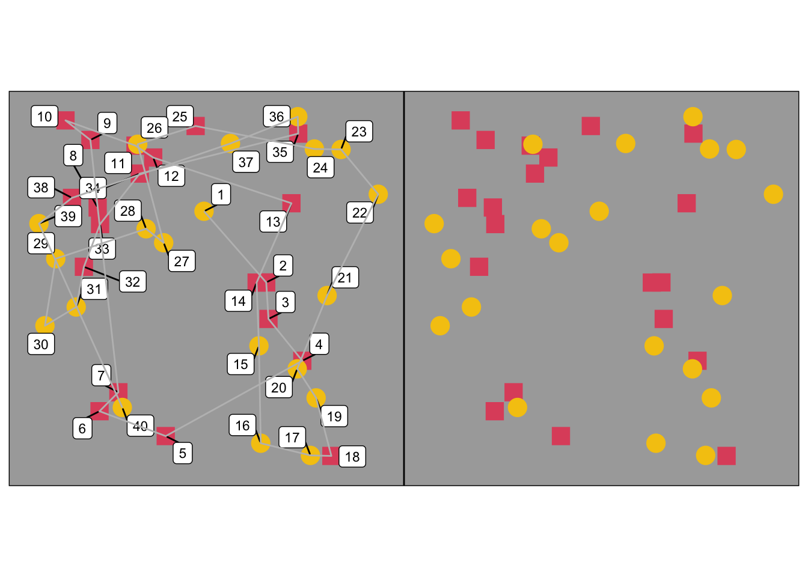
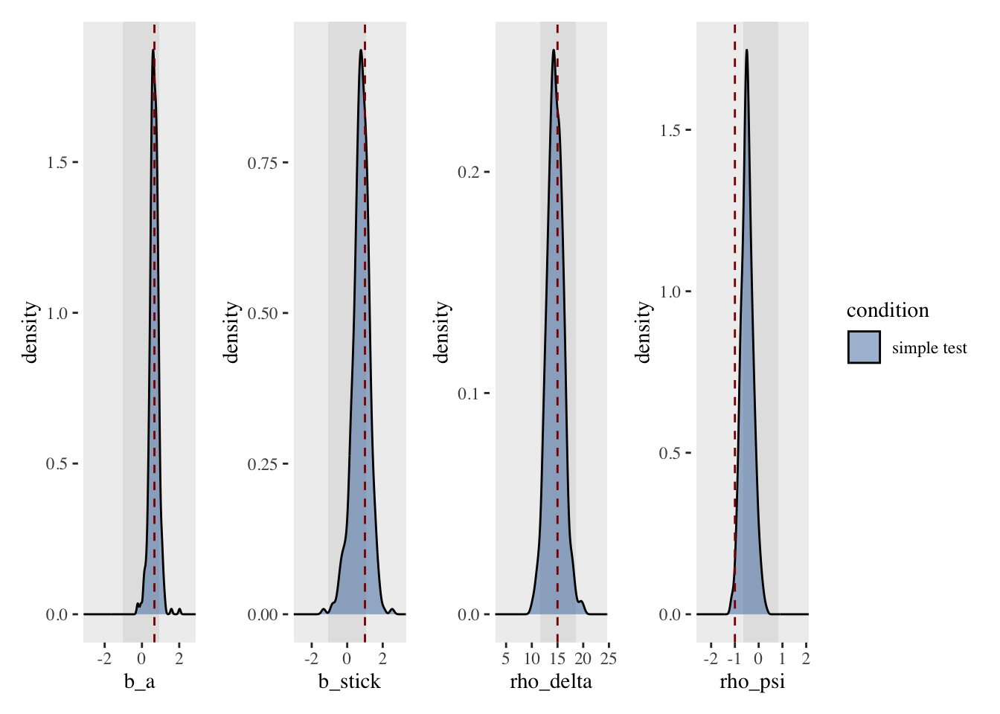
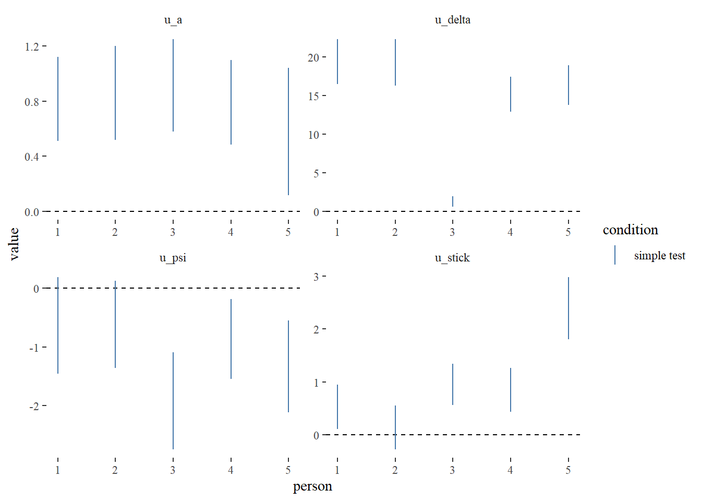
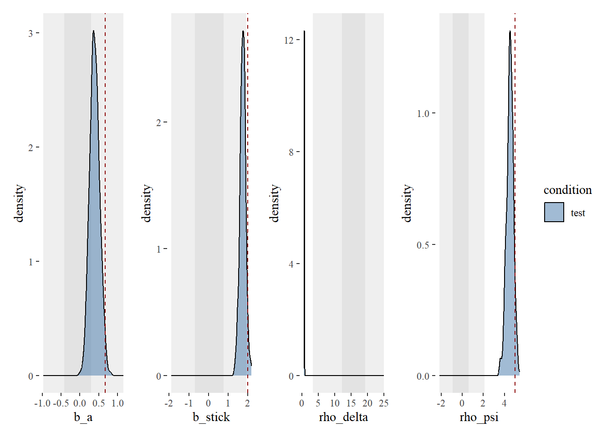
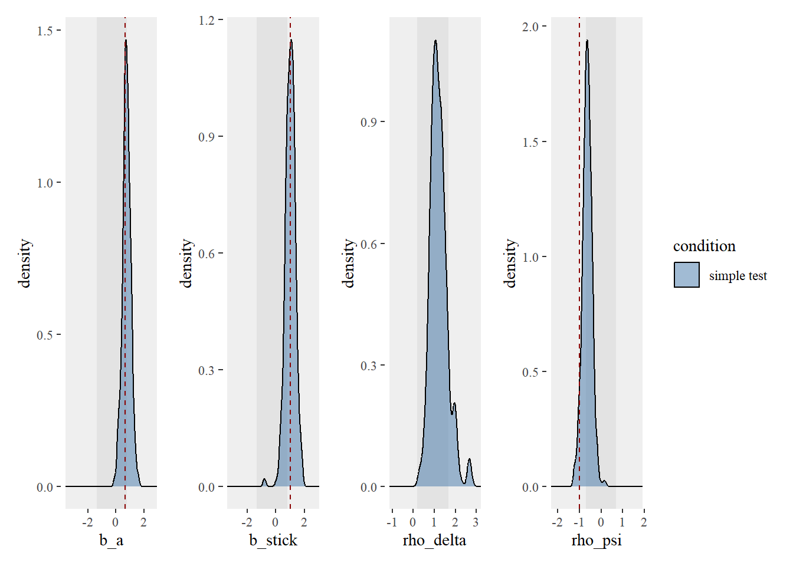
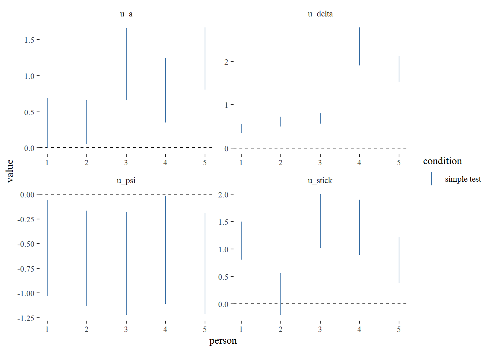

library(tidyverse)
library(cmdstanr)
source("../../functions/import_data.R")
source("../../functions/prep_data.R")
source("../../functions/compute_summary_stats.R")
source("../../functions/plot_model.R")
source("../../functions/plot_data.R")
source("../../functions/post_functions.R")
source("../../functions/sim_foraging_data.R")
options(mc.cores = 1)
# set global ggplot theme
theme_set(ggthemes::theme_tufte())2) fitting the NEW old foraging model - to simulated data
Fitting Model to Simulated Data
- Model 1.0: the original model first detailed in Clarke et al (2022), reimplemented in new code. The only other edit is to correctly calculate absolute proximity (we previously scaled before calculating inter-item distances, which led to expansion of vertical distances compared to the horizontal in cases where foraging stimuli were arranged on a rectangular grid - this minor edit makes little difference to the overall fit of the model).
- Model 1.1: the same as model 1.1., except it uses relative proximity - for each item selection, we divide all inter-target distances by the distance to the closest item. The idea behind this is that it may allow the model’s proximity weighting to cope better towards the end of a trial when the items are sparser.
- Model 1.2: here we add in a component that allows for an absolute direction bias i.e. a bias for moving horizontally, or vertically. In this version, kappa is a hyperparameter.
Example 1 - simple model with one participant
First simulate some data
Our first simple simulation will involve 2 target classes, each with 20 items on screen. We will simulate one of the targets to be preferred over the other (item_class_weights), a small stick bias (b_stick), moderate proximity bias (rho_delta) and a fairly strong fowards momentum (rho_psi).
Absolute direction tuning is only used from model 1.2 onwards: in this simulation, we are adding in a stronger bias for horizontal compared to vertical directions (is this true??)
This simple simulation only considers one participant, doing 10 trials of one condition.
n_trials_per_cond <- 10
n_item_class <- 2
n_item_per_class <- 20
item_class_weights = c(0.7, 0.3, 0, 0)
b_stick = 2
b_memory = 0
abs_dir_tuning = list(kappa = rep(20, 4), theta = c(2, 0.5, 1, 0.5))
rho_delta = 10
rho_psi = 5
d1 <- sim_foraging_multiple_trials(person = 1,
condition = "test",
n_item_class = n_item_class, n_item_per_class = n_item_per_class,
item_class_weights = item_class_weights, item_labels = item_labels,
b_stick = b_stick,
rho_delta = rho_delta,
rho_psi = rho_psi,
abs_dir_tuning = abs_dir_tuning,
b_memory = b_memory,
inital_sel_params = inital_sel_params,
init_sel_lambda = init_sel_lambda)Fitting model 1.0
Here, we fit model version 1.0.
d1_list <- prep_data_for_stan(d1$found, d1$stim, c("spatial", "item_class"))
# add priors to list
d1_list$prior_mu_b_a <- 0
d1_list$prior_sd_b_a <- 0.5
d1_list$prior_mu_b_stick <- 0
d1_list$prior_sd_b_stick <- 1
d1_list$prior_mu_rho_delta <- 15
d1_list$prior_sd_rho_delta <- 5
d1_list$prior_mu_rho_psi <- 0
d1_list$prior_sd_rho_psi <- 1
d1_list$n_trials_to_sim <- 10iter = 100
mod <- cmdstan_model("../../models/simple/FoMo1_0.stan",
cpp_options = list(stan_threads = TRUE), force_recompile = TRUE)
# run model
m_simple_1_0 <- mod$sample(data = d1_list,
chains = 4, parallel_chains = 4, threads = 4,
refresh = 0,
iter_warmup = iter, iter_sampling = iter,
sig_figs = 3)
m_simple_1_0$save_object("scratch/simple_1_0_tmp.rds")Extract posterior
We can then extract posterior samples.
# read in model
m_simple_1_0 <- readRDS("scratch/simple_1_0_tmp.rds")
# extract post
post <- extract_post(m_simple_1_0, d1, multi_level = FALSE)Plot model
We plot the fixed effects of the model (and can confirm that we are able to recover the parameters we put into the simulation).
# plot model
plot_model_fixed(post, gt = list(b_a = plogis(item_class_weights[1]),
b_stick = b_stick,
rho_delta = rho_delta,
rho_psi = rho_psi))
Check predictions
We can assess model accuracy i.e. how well can it predict the next target chosen?
pred <- summarise_postpred(m_simple_1_0, d1)
plot_model_accuracy(pred)`summarise()` has grouped output by 'found'. You can override using the
`.groups` argument.
Plot comparison between a real and a simulated trial
And we can plot a comparison between a real and a simulated trial in order to visually inspect for obvious differences in the way the model is foraging compared to the simulated data.
# plot comparison between a real and simulated trial
pltreal <- plot_a_trial(d1$stim, d1$found, 1)
pltsim <- plot_a_trial(d1$stim, pred$sim %>% filter(.draw == 1), trial = 1)
pltreal + pltsim
Example 2 - multilevel model
First simulate some data
We can build up our model to include multiple participants (5 in this case). Here, we again only consider one condition, but multiple conditions could be included (e.g. feature/conjunction).
item_class_weights = list(c(0.7, 0.3, 0, 0))
b_stick = 1
rho_delta = 15
sd_rho_delta = 5
rho_psi = -1
abs_dir_tuning = list(kappa = rep(10, 4), theta = rep(1, 4))
# initial bias params
inital_sel_params <- tibble(
a1x = 2,
b1x = 2,
a2x = 1,
b2x = 10,
a1y = 2,
b1y = 2,
a2y = 10,
b2y = 1)
d2 <- sim_foraging_people(n_people = 5,
n_conditions = 1,
cond_lab = c("simple test"),
n_trials_per_cond = 4,
n_item_class = 2, n_item_per_class = 20,
item_class_weights, sd_bA = 0.2,
b_stick = b_stick, sd_b_stick = 1,
rho_delta = rho_delta, sd_rho_delta = sd_rho_delta,
rho_psi = rho_psi, sd_rho_psi = 0.5,
abs_dir_tuning = abs_dir_tuning,
inital_sel_params = inital_sel_params) ■■■■■■■■■■■■■ 40% | ETA: 4sd2$found <- fix_person_and_trial(d2$found)
d2$stim <- fix_person_and_trial(d2$stim)Now fit our model
We can use very similar code to fit the multi-level version of the model.
d2_list <- prep_data_for_stan(d2$found, d2$stim, c("spatial", "item_class"))
d2_list_p <- add_priors_to_d_list(d2_list, modelver = "1.0")
d2_list_p$n_trials_to_sim <- 10iter = 100
mod <- cmdstan_model("../../models/multi_level/FoMo1_0.stan",
cpp_options = list(stan_threads = TRUE), force_recompile = TRUE)
fit <- mod$sample(data = d2_list_p,
chains = 4, parallel_chains = 4, threads = 4,
refresh = 10,
iter_warmup = iter, iter_sampling = iter,
sig_figs = 3)
fit$save_object("scratch/multi_level_1_0_tmp.rds")fit <- readRDS("scratch/multi_level_1_0_tmp.rds")Posterior Density Plots
We can plot both fixed and random effects from the model.
post <- extract_post(fit, d2)Fixed Effects
plot_model_fixed(post, gt = list(b_a = plogis(item_class_weights[[1]][1]),
b_stick = b_stick,
rho_delta = rho_delta,
rho_psi = rho_psi))
Random Effects
plot_model_random(post)
Example 3 - fitting FoMo 1.1
The examples below use the same simple and multilevel simulations as in the previous example, but instead fit model version 1.1.
The simple version
iter = 100
item_class_weights = c(0.7, 0.3, 0, 0)
b_stick = 2
rho_delta = 10
rho_psi = 5mod <- cmdstan_model("../../models/simple/FoMo1_1.stan",
cpp_options = list(stan_threads = TRUE), force_recompile = TRUE)
# fix rho_delta prior
d1_list$prior_mu_rho_delta <- 1
d1_list$prior_sd_rho_delta <- 1
# run model
m_simple_1_1 <- mod$sample(data = d1_list,
chains = 4, parallel_chains = 4, threads = 4,
refresh = 0,
iter_warmup = iter, iter_sampling = iter,
sig_figs = 3)
m_simple_1_1$save_object("scratch/simple_1_1_tmp.rds")# read in model
m_simple_1_1 <- readRDS("scratch/simple_1_1_tmp.rds")
# extract post
post <- extract_post(m_simple_1_1, d1, multi_level = FALSE)item_class_weights = c(0.7, 0.3, 0, 0)
b_stick = 2
rho_delta = 10
rho_psi = 5
# plot model
plot_model_fixed(post, gt = list(b_a = plogis(item_class_weights[1]),
b_stick = b_stick,
rho_psi = rho_psi))
The multilevel variant
iter = 100
mod <- cmdstan_model("../../models/multi_level/FoMo1_1.stan",
cpp_options = list(stan_threads = TRUE), force_recompile = TRUE)
d2_list_p <- add_priors_to_d_list(d2_list, modelver = "1.1")
d2_list_p$n_trials_to_sim <- 10
fit <- mod$sample(data = d2_list_p,
chains = 4, parallel_chains = 4, threads = 4,
refresh = 10,
iter_warmup = iter, iter_sampling = iter,
sig_figs = 3)
fit$save_object("scratch/multi_level_1_1_tmp.rds")fit <- readRDS("scratch/multi_level_1_1_tmp.rds")Posterior Density Plots
post <- extract_post(fit, d2)Fixed Effects
b_stick = 1
rho_delta = 15
rho_psi = -1
plot_model_fixed(post, gt = list(b_a = plogis(item_class_weights[[1]][1]),
b_stick = b_stick,
rho_psi = rho_psi))
Random Effects
plot_model_random(post)
Comparing 1.1 and 1.0
Simple model
Note that loo does not play very nicely with RMarkdown and needs to be pre-computed.
#m_simple_1_0 <- readRDS("scratch/simple_1_0_tmp.rds")
#m_simple_1_1 <- readRDS("scratch/simple_1_1_tmp.rds")
#loo_1_1 <- m_simple_1_1$loo()
#loo_1_0 <- m_simple_1_0$loo()
#loo_1_1_mm <- m_simple_1_1$loo(moment_match = TRUE)
#loo_1_0_mm <- m_simple_1_0$loo(moment_match = TRUE)
#saveRDS(loo_1_0_mm, "scratch/loo_1_0_mm.rds")
#saveRDS(loo_1_1_mm, "scratch/loo_1_1_mm.rds")
loo_1_0_mm <- readRDS("scratch/loo_1_0_mm.rds")
loo_1_1_mm <- readRDS("scratch/loo_1_1_mm.rds")
loo::loo_model_weights(list(
"model 1.1" = loo_1_1_mm,
"model 1.0" = loo_1_0_mm))Method: stacking
------
weight
model 1.1 0.000
model 1.0 1.000 Multi-level model
#m_ml_1_0 <- readRDS("scratch/multi_level_1_0_tmp.rds")
#m_ml_1_1 <- readRDS("scratch/multi_level_1_1_tmp.rds")
#loo_1_1 <- m_ml_1_1$loo()
#loo_1_0 <- m_ml_1_0$loo()
#loo_1_1_mm <- m_ml_1_1$loo(moment_match = TRUE)
#loo_1_0_mm <- m_ml_1_0$loo(moment_match = TRUE)
#saveRDS(loo_1_0_mm, "scratch/loo_1_0_ml_mm.rds")
#saveRDS(loo_1_1_mm, "scratch/loo_1_1_ml_mm.rds")
loo_1_0_ml_mm <- readRDS("scratch/loo_1_0_ml_mm.rds")
loo_1_1_ml_mm <- readRDS("scratch/loo_1_1_ml_mm.rds")
loo::loo_model_weights(list(
"model 1.1" = loo_1_1_ml_mm,
"model 1.0" = loo_1_0_ml_mm))Method: stacking
------
weight
model 1.1 0.000
model 1.0 1.000 In both cases, we see that the model weights prefer model 1.0 over 1.1 - this probably reflects the fact that the simulation methods here use the 1.0 methods to generate the data.
Simulating data with relative proximity set up
We can test that model 1.1 is doing what we think it is by simulating data using relative proximity. Here, we would expect model 1.1 to be a better fit for the data compared to model 1.0, and this is what we see below.
n_trials_per_cond <- 10
n_item_class <- 2
n_item_per_class <- 20
item_class_weights = c(0.7, 0.3, 0, 0)
b_stick = 2
b_memory = 0
abs_dir_tuning = list(kappa = rep(20, 4), theta = c(2, 0.5, 1, 0.5))
rho_delta = 10
rho_psi = 5
dr <- sim_foraging_multiple_trials(person = 1,
condition = "test",
n_item_class = n_item_class, n_item_per_class = n_item_per_class,
item_class_weights = item_class_weights, item_labels = item_labels,
b_stick = b_stick,
rho_delta = rho_delta,
rho_psi = rho_psi,
abs_dir_tuning = abs_dir_tuning,
b_memory = b_memory,
inital_sel_params = inital_sel_params,
init_sel_lambda = init_sel_lambda,
rel_proximity = TRUE)dr_list <- prep_data_for_stan(dr$found, dr$stim, c("spatial", "item_class"))
# add priors to list
dr_list$prior_mu_b_a <- 0
dr_list$prior_sd_b_a <- 0.5
dr_list$prior_mu_b_stick <- 0
dr_list$prior_sd_b_stick <- 1
dr_list$prior_mu_rho_delta <- 15
dr_list$prior_sd_rho_delta <- 5
dr_list$prior_mu_rho_psi <- 0
dr_list$prior_sd_rho_psi <- 1
dr_list$n_trials_to_sim <- 10iter = 100
mod <- cmdstan_model("../../models/simple/FoMo1_0.stan",
cpp_options = list(stan_threads = TRUE), force_recompile = TRUE)
dr_1_0 <- mod$sample(data = dr_list,
chains = 4, parallel_chains = 4, threads = 4,
refresh = 10,
iter_warmup = iter, iter_sampling = iter,
sig_figs = 3)iter = 100
mod <- cmdstan_model("../../models/simple/FoMo1_1.stan",
cpp_options = list(stan_threads = TRUE), force_recompile = TRUE)
dr_1_1 <- mod$sample(data = dr_list,
chains = 4, parallel_chains = 4, threads = 4,
refresh = 10,
iter_warmup = iter, iter_sampling = iter,
sig_figs = 3)# pre-computed to save time
#dr_1_0_loo <- dr_1_0$loo(moment_match = TRUE)
#dr_1_1_loo <- dr_1_1$loo(moment_match = TRUE)
#saveRDS(dr_1_0_loo, "scratch/dr_1_0_loo.rds")
#saveRDS(dr_1_1_loo, "scratch/dr_1_1_loo.rds")
dr_1_0_loo <- readRDS("scratch/dr_1_0_loo.rds")
dr_1_1_loo <- readRDS("scratch/dr_1_1_loo.rds")
loo::loo_model_weights(list(
"model 1.1" = dr_1_1_loo,
"model 1.0" = dr_1_0_loo))Method: stacking
------
weight
model 1.1 1.000
model 1.0 0.000 Model 1.2
Start with a simple model.
iter = 100
d1_list$prior_theta_lambda <- 10
d1_list$kappa <- 10
mod <- cmdstan_model("../../models/simple/FoMo1_2.stan",
cpp_options = list(stan_threads = TRUE), force_recompile = TRUE)In file included from stan/lib/stan_math/lib/tbb_2020.3/include/tbb/tbb_profiling.h:123,
from stan/lib/stan_math/lib/tbb_2020.3/include/tbb/task.h:36,
from stan/lib/stan_math/lib/tbb_2020.3/include/tbb/task_arena.h:23,
from stan/lib/stan_math/stan/math/prim/core/init_threadpool_tbb.hpp:18,
from stan/lib/stan_math/stan/math/prim/core.hpp:4,
from stan/lib/stan_math/stan/math/rev/core/Eigen_NumTraits.hpp:5,
from stan/lib/stan_math/stan/math/rev/core/typedefs.hpp:7,
from stan/lib/stan_math/stan/math/rev/core/chainable_object.hpp:6,
from stan/lib/stan_math/stan/math/rev/core.hpp:10,
from stan/lib/stan_math/stan/math/rev.hpp:10,
from stan/lib/stan_math/stan/math.hpp:19,
from stan/src/stan/model/model_header.hpp:4,
from C:/Users/Alasdair/AppData/Local/Temp/RtmpigYEqH/model-697448d43fa.hpp:2:
stan/lib/stan_math/lib/tbb_2020.3/include/tbb/atomic.h:422:24: warning: template-id not allowed for constructor in C++20 [-Wtemplate-id-cdtor]
422 | constexpr atomic<T>(const atomic<T>& rhs): internal::atomic_impl<T>(rhs) {}
| ^stan/lib/stan_math/lib/tbb_2020.3/include/tbb/atomic.h:422:24: note: remove the '< >'
stan/lib/stan_math/lib/tbb_2020.3/include/tbb/atomic.h:437:32: warning: template-id not allowed for constructor in C++20 [-Wtemplate-id-cdtor]
437 | constexpr atomic<T>(const atomic<T>& rhs): \
| ^
stan/lib/stan_math/lib/tbb_2020.3/include/tbb/atomic.h:454:1: note: in expansion of macro '__TBB_DECL_ATOMIC'
454 | __TBB_DECL_ATOMIC(__TBB_LONG_LONG)
| ^~~~~~~~~~~~~~~~~
stan/lib/stan_math/lib/tbb_2020.3/include/tbb/atomic.h:437:32: note: remove the '< >'
437 | constexpr atomic<T>(const atomic<T>& rhs): \
| ^
stan/lib/stan_math/lib/tbb_2020.3/include/tbb/atomic.h:454:1: note: in expansion of macro '__TBB_DECL_ATOMIC'
454 | __TBB_DECL_ATOMIC(__TBB_LONG_LONG)
| ^~~~~~~~~~~~~~~~~
stan/lib/stan_math/lib/tbb_2020.3/include/tbb/atomic.h:437:32: warning: template-id not allowed for constructor in C++20 [-Wtemplate-id-cdtor]
437 | constexpr atomic<T>(const atomic<T>& rhs): \
| ^
stan/lib/stan_math/lib/tbb_2020.3/include/tbb/atomic.h:455:1: note: in expansion of macro '__TBB_DECL_ATOMIC'
455 | __TBB_DECL_ATOMIC(unsigned __TBB_LONG_LONG)
| ^~~~~~~~~~~~~~~~~
stan/lib/stan_math/lib/tbb_2020.3/include/tbb/atomic.h:437:32: note: remove the '< >'
437 | constexpr atomic<T>(const atomic<T>& rhs): \
| ^
stan/lib/stan_math/lib/tbb_2020.3/include/tbb/atomic.h:455:1: note: in expansion of macro '__TBB_DECL_ATOMIC'
455 | __TBB_DECL_ATOMIC(unsigned __TBB_LONG_LONG)
| ^~~~~~~~~~~~~~~~~
stan/lib/stan_math/lib/tbb_2020.3/include/tbb/atomic.h:437:32: warning: template-id not allowed for constructor in C++20 [-Wtemplate-id-cdtor]
437 | constexpr atomic<T>(const atomic<T>& rhs): \
| ^
stan/lib/stan_math/lib/tbb_2020.3/include/tbb/atomic.h:459:1: note: in expansion of macro '__TBB_DECL_ATOMIC'
459 | __TBB_DECL_ATOMIC(long)
| ^~~~~~~~~~~~~~~~~
stan/lib/stan_math/lib/tbb_2020.3/include/tbb/atomic.h:437:32: note: remove the '< >'
437 | constexpr atomic<T>(const atomic<T>& rhs): \
| ^
stan/lib/stan_math/lib/tbb_2020.3/include/tbb/atomic.h:459:1: note: in expansion of macro '__TBB_DECL_ATOMIC'
459 | __TBB_DECL_ATOMIC(long)
| ^~~~~~~~~~~~~~~~~stan/lib/stan_math/lib/tbb_2020.3/include/tbb/atomic.h:437:32: warning: template-id not allowed for constructor in C++20 [-Wtemplate-id-cdtor]
437 | constexpr atomic<T>(const atomic<T>& rhs): \
| ^
stan/lib/stan_math/lib/tbb_2020.3/include/tbb/atomic.h:460:1: note: in expansion of macro '__TBB_DECL_ATOMIC'
460 | __TBB_DECL_ATOMIC(unsigned long)
| ^~~~~~~~~~~~~~~~~
stan/lib/stan_math/lib/tbb_2020.3/include/tbb/atomic.h:437:32: note: remove the '< >'
437 | constexpr atomic<T>(const atomic<T>& rhs): \
| ^
stan/lib/stan_math/lib/tbb_2020.3/include/tbb/atomic.h:460:1: note: in expansion of macro '__TBB_DECL_ATOMIC'
460 | __TBB_DECL_ATOMIC(unsigned long)
| ^~~~~~~~~~~~~~~~~
stan/lib/stan_math/lib/tbb_2020.3/include/tbb/atomic.h:437:32: warning: template-id not allowed for constructor in C++20 [-Wtemplate-id-cdtor]
437 | constexpr atomic<T>(const atomic<T>& rhs): \
| ^
stan/lib/stan_math/lib/tbb_2020.3/include/tbb/atomic.h:491:1: note: in expansion of macro '__TBB_DECL_ATOMIC'
491 | __TBB_DECL_ATOMIC(unsigned)
| ^~~~~~~~~~~~~~~~~
stan/lib/stan_math/lib/tbb_2020.3/include/tbb/atomic.h:437:32: note: remove the '< >'
437 | constexpr atomic<T>(const atomic<T>& rhs): \
| ^
stan/lib/stan_math/lib/tbb_2020.3/include/tbb/atomic.h:491:1: note: in expansion of macro '__TBB_DECL_ATOMIC'
491 | __TBB_DECL_ATOMIC(unsigned)
| ^~~~~~~~~~~~~~~~~
stan/lib/stan_math/lib/tbb_2020.3/include/tbb/atomic.h:437:32: warning: template-id not allowed for constructor in C++20 [-Wtemplate-id-cdtor]
437 | constexpr atomic<T>(const atomic<T>& rhs): \
| ^
stan/lib/stan_math/lib/tbb_2020.3/include/tbb/atomic.h:492:1: note: in expansion of macro '__TBB_DECL_ATOMIC'
492 | __TBB_DECL_ATOMIC(int)
| ^~~~~~~~~~~~~~~~~
stan/lib/stan_math/lib/tbb_2020.3/include/tbb/atomic.h:437:32: note: remove the '< >'
437 | constexpr atomic<T>(const atomic<T>& rhs): \
| ^
stan/lib/stan_math/lib/tbb_2020.3/include/tbb/atomic.h:492:1: note: in expansion of macro '__TBB_DECL_ATOMIC'
492 | __TBB_DECL_ATOMIC(int)
| ^~~~~~~~~~~~~~~~~
stan/lib/stan_math/lib/tbb_2020.3/include/tbb/atomic.h:437:32: warning: template-id not allowed for constructor in C++20 [-Wtemplate-id-cdtor]
437 | constexpr atomic<T>(const atomic<T>& rhs): \
| ^
stan/lib/stan_math/lib/tbb_2020.3/include/tbb/atomic.h:495:1: note: in expansion of macro '__TBB_DECL_ATOMIC'
495 | __TBB_DECL_ATOMIC(unsigned short)
| ^~~~~~~~~~~~~~~~~
stan/lib/stan_math/lib/tbb_2020.3/include/tbb/atomic.h:437:32: note: remove the '< >'
437 | constexpr atomic<T>(const atomic<T>& rhs): \
| ^
stan/lib/stan_math/lib/tbb_2020.3/include/tbb/atomic.h:495:1: note: in expansion of macro '__TBB_DECL_ATOMIC'
495 | __TBB_DECL_ATOMIC(unsigned short)
| ^~~~~~~~~~~~~~~~~
stan/lib/stan_math/lib/tbb_2020.3/include/tbb/atomic.h:437:32: warning: template-id not allowed for constructor in C++20 [-Wtemplate-id-cdtor]
437 | constexpr atomic<T>(const atomic<T>& rhs): \
| ^
stan/lib/stan_math/lib/tbb_2020.3/include/tbb/atomic.h:496:1: note: in expansion of macro '__TBB_DECL_ATOMIC'
496 | __TBB_DECL_ATOMIC(short)
| ^~~~~~~~~~~~~~~~~
stan/lib/stan_math/lib/tbb_2020.3/include/tbb/atomic.h:437:32: note: remove the '< >'
437 | constexpr atomic<T>(const atomic<T>& rhs): \
| ^
stan/lib/stan_math/lib/tbb_2020.3/include/tbb/atomic.h:496:1: note: in expansion of macro '__TBB_DECL_ATOMIC'
496 | __TBB_DECL_ATOMIC(short)
| ^~~~~~~~~~~~~~~~~
stan/lib/stan_math/lib/tbb_2020.3/include/tbb/atomic.h:437:32: warning: template-id not allowed for constructor in C++20 [-Wtemplate-id-cdtor]
437 | constexpr atomic<T>(const atomic<T>& rhs): \
| ^
stan/lib/stan_math/lib/tbb_2020.3/include/tbb/atomic.h:497:1: note: in expansion of macro '__TBB_DECL_ATOMIC'
497 | __TBB_DECL_ATOMIC(char)
| ^~~~~~~~~~~~~~~~~stan/lib/stan_math/lib/tbb_2020.3/include/tbb/atomic.h:437:32: note: remove the '< >'
437 | constexpr atomic<T>(const atomic<T>& rhs): \
| ^
stan/lib/stan_math/lib/tbb_2020.3/include/tbb/atomic.h:497:1: note: in expansion of macro '__TBB_DECL_ATOMIC'
497 | __TBB_DECL_ATOMIC(char)
| ^~~~~~~~~~~~~~~~~
stan/lib/stan_math/lib/tbb_2020.3/include/tbb/atomic.h:437:32: warning: template-id not allowed for constructor in C++20 [-Wtemplate-id-cdtor]
437 | constexpr atomic<T>(const atomic<T>& rhs): \
| ^
stan/lib/stan_math/lib/tbb_2020.3/include/tbb/atomic.h:498:1: note: in expansion of macro '__TBB_DECL_ATOMIC'
498 | __TBB_DECL_ATOMIC(signed char)
| ^~~~~~~~~~~~~~~~~
stan/lib/stan_math/lib/tbb_2020.3/include/tbb/atomic.h:437:32: note: remove the '< >'
437 | constexpr atomic<T>(const atomic<T>& rhs): \
| ^
stan/lib/stan_math/lib/tbb_2020.3/include/tbb/atomic.h:498:1: note: in expansion of macro '__TBB_DECL_ATOMIC'
498 | __TBB_DECL_ATOMIC(signed char)
| ^~~~~~~~~~~~~~~~~
stan/lib/stan_math/lib/tbb_2020.3/include/tbb/atomic.h:437:32: warning: template-id not allowed for constructor in C++20 [-Wtemplate-id-cdtor]
437 | constexpr atomic<T>(const atomic<T>& rhs): \
| ^
stan/lib/stan_math/lib/tbb_2020.3/include/tbb/atomic.h:499:1: note: in expansion of macro '__TBB_DECL_ATOMIC'
499 | __TBB_DECL_ATOMIC(unsigned char)
| ^~~~~~~~~~~~~~~~~
stan/lib/stan_math/lib/tbb_2020.3/include/tbb/atomic.h:437:32: note: remove the '< >'
437 | constexpr atomic<T>(const atomic<T>& rhs): \
| ^
stan/lib/stan_math/lib/tbb_2020.3/include/tbb/atomic.h:499:1: note: in expansion of macro '__TBB_DECL_ATOMIC'
499 | __TBB_DECL_ATOMIC(unsigned char)
| ^~~~~~~~~~~~~~~~~
stan/lib/stan_math/lib/tbb_2020.3/include/tbb/atomic.h:437:32: warning: template-id not allowed for constructor in C++20 [-Wtemplate-id-cdtor]
437 | constexpr atomic<T>(const atomic<T>& rhs): \
| ^
stan/lib/stan_math/lib/tbb_2020.3/include/tbb/atomic.h:502:1: note: in expansion of macro '__TBB_DECL_ATOMIC'
502 | __TBB_DECL_ATOMIC(wchar_t)
| ^~~~~~~~~~~~~~~~~
stan/lib/stan_math/lib/tbb_2020.3/include/tbb/atomic.h:437:32: note: remove the '< >'
437 | constexpr atomic<T>(const atomic<T>& rhs): \
| ^
stan/lib/stan_math/lib/tbb_2020.3/include/tbb/atomic.h:502:1: note: in expansion of macro '__TBB_DECL_ATOMIC'
502 | __TBB_DECL_ATOMIC(wchar_t)
| ^~~~~~~~~~~~~~~~~In file included from stan/lib/stan_math/stan/math/prim/prob/normal_ccdf_log.hpp:5,
from stan/lib/stan_math/stan/math/prim/prob.hpp:243,
from stan/lib/stan_math/stan/math/prim.hpp:16,
from stan/lib/stan_math/stan/math/rev.hpp:16:
stan/lib/stan_math/stan/math/prim/prob/normal_lccdf.hpp: In function 'stan::return_type_t<T_x, T_sigma, T_l> stan::math::normal_lccdf(const T_y&, const T_loc&, const T_scale&)':
stan/lib/stan_math/stan/math/prim/prob/normal_lccdf.hpp:68: note: '-Wmisleading-indentation' is disabled from this point onwards, since column-tracking was disabled due to the size of the code/headers
68 | } else if (scaled_diff > 8.25 * INV_SQRT_TWO) {stan/lib/stan_math/stan/math/prim/prob/normal_lccdf.hpp:68: note: adding '-flarge-source-files' will allow for more column-tracking support, at the expense of compilation time and memory# run model
m_simple_1_2 <- mod$sample(data = d1_list,
chains = 4, parallel_chains = 4, threads = 4,
refresh = 0,
iter_warmup = iter, iter_sampling = iter,
sig_figs = 3)Running MCMC with 4 parallel chains, with 4 thread(s) per chain...
Chain 1 WARNING: There aren't enough warmup iterations to fit the
Chain 1 three stages of adaptation as currently configured.
Chain 1 Reducing each adaptation stage to 15%/75%/10% of
Chain 1 the given number of warmup iterations:
Chain 1 init_buffer = 15
Chain 1 adapt_window = 75
Chain 1 term_buffer = 10 Chain 1 Informational Message: The current Metropolis proposal is about to be rejected because of the following issue:Chain 1 Exception: categorical_lpmf: Probabilities parameter is not a valid simplex. sum(Probabilities parameter) = nan, but should be 1 (in 'C:/Users/Alasdair/AppData/Local/Temp/RtmpigYEqH/model-697448d43fa.stan', line 170, column 4 to column 48)Chain 1 If this warning occurs sporadically, such as for highly constrained variable types like covariance matrices, then the sampler is fine,Chain 1 but if this warning occurs often then your model may be either severely ill-conditioned or misspecified.Chain 1 Chain 1 Informational Message: The current Metropolis proposal is about to be rejected because of the following issue:Chain 1 Exception: categorical_lpmf: Probabilities parameter is not a valid simplex. sum(Probabilities parameter) = nan, but should be 1 (in 'C:/Users/Alasdair/AppData/Local/Temp/RtmpigYEqH/model-697448d43fa.stan', line 170, column 4 to column 48)Chain 1 If this warning occurs sporadically, such as for highly constrained variable types like covariance matrices, then the sampler is fine,Chain 1 but if this warning occurs often then your model may be either severely ill-conditioned or misspecified.Chain 1 Chain 1 Informational Message: The current Metropolis proposal is about to be rejected because of the following issue:Chain 1 Exception: categorical_lpmf: Probabilities parameter is not a valid simplex. sum(Probabilities parameter) = nan, but should be 1 (in 'C:/Users/Alasdair/AppData/Local/Temp/RtmpigYEqH/model-697448d43fa.stan', line 170, column 4 to column 48)Chain 1 If this warning occurs sporadically, such as for highly constrained variable types like covariance matrices, then the sampler is fine,Chain 1 but if this warning occurs often then your model may be either severely ill-conditioned or misspecified.Chain 1 Chain 2 Rejecting initial value:Chain 2 Error evaluating the log probability at the initial value.Chain 2 Exception: categorical_lpmf: Probabilities parameter is not a valid simplex. sum(Probabilities parameter) = nan, but should be 1 (in 'C:/Users/Alasdair/AppData/Local/Temp/RtmpigYEqH/model-697448d43fa.stan', line 170, column 4 to column 48)
Chain 2 Exception: categorical_lpmf: Probabilities parameter is not a valid simplex. sum(Probabilities parameter) = nan, but should be 1 (in 'C:/Users/Alasdair/AppData/Local/Temp/RtmpigYEqH/model-697448d43fa.stan', line 170, column 4 to column 48)Chain 2 WARNING: There aren't enough warmup iterations to fit theChain 2 three stages of adaptation as currently configured.Chain 2 Reducing each adaptation stage to 15%/75%/10% ofChain 2 the given number of warmup iterations:Chain 2 init_buffer = 15Chain 2 adapt_window = 75Chain 2 term_buffer = 10Chain 2 Informational Message: The current Metropolis proposal is about to be rejected because of the following issue:Chain 2 Exception: categorical_lpmf: Probabilities parameter is not a valid simplex. sum(Probabilities parameter) = nan, but should be 1 (in 'C:/Users/Alasdair/AppData/Local/Temp/RtmpigYEqH/model-697448d43fa.stan', line 170, column 4 to column 48)Chain 2 If this warning occurs sporadically, such as for highly constrained variable types like covariance matrices, then the sampler is fine,Chain 2 but if this warning occurs often then your model may be either severely ill-conditioned or misspecified.Chain 2 Chain 2 Informational Message: The current Metropolis proposal is about to be rejected because of the following issue:Chain 2 Exception: categorical_lpmf: Probabilities parameter is not a valid simplex. sum(Probabilities parameter) = nan, but should be 1 (in 'C:/Users/Alasdair/AppData/Local/Temp/RtmpigYEqH/model-697448d43fa.stan', line 170, column 4 to column 48)Chain 2 If this warning occurs sporadically, such as for highly constrained variable types like covariance matrices, then the sampler is fine,Chain 2 but if this warning occurs often then your model may be either severely ill-conditioned or misspecified.Chain 2 Chain 2 Informational Message: The current Metropolis proposal is about to be rejected because of the following issue:Chain 2 Exception: categorical_lpmf: Probabilities parameter is not a valid simplex. sum(Probabilities parameter) = nan, but should be 1 (in 'C:/Users/Alasdair/AppData/Local/Temp/RtmpigYEqH/model-697448d43fa.stan', line 170, column 4 to column 48)Chain 2 If this warning occurs sporadically, such as for highly constrained variable types like covariance matrices, then the sampler is fine,Chain 2 but if this warning occurs often then your model may be either severely ill-conditioned or misspecified.Chain 2 Chain 2 Informational Message: The current Metropolis proposal is about to be rejected because of the following issue:Chain 2 Exception: categorical_lpmf: Probabilities parameter is not a valid simplex. sum(Probabilities parameter) = nan, but should be 1 (in 'C:/Users/Alasdair/AppData/Local/Temp/RtmpigYEqH/model-697448d43fa.stan', line 170, column 4 to column 48)Chain 2 If this warning occurs sporadically, such as for highly constrained variable types like covariance matrices, then the sampler is fine,Chain 2 but if this warning occurs often then your model may be either severely ill-conditioned or misspecified.Chain 2 Chain 3 WARNING: There aren't enough warmup iterations to fit the
Chain 3 three stages of adaptation as currently configured.
Chain 3 Reducing each adaptation stage to 15%/75%/10% of
Chain 3 the given number of warmup iterations:
Chain 3 init_buffer = 15
Chain 3 adapt_window = 75
Chain 3 term_buffer = 10 Chain 3 Informational Message: The current Metropolis proposal is about to be rejected because of the following issue:Chain 3 Exception: categorical_lpmf: Probabilities parameter is not a valid simplex. sum(Probabilities parameter) = nan, but should be 1 (in 'C:/Users/Alasdair/AppData/Local/Temp/RtmpigYEqH/model-697448d43fa.stan', line 170, column 4 to column 48)Chain 3 If this warning occurs sporadically, such as for highly constrained variable types like covariance matrices, then the sampler is fine,Chain 3 but if this warning occurs often then your model may be either severely ill-conditioned or misspecified.Chain 3 Chain 3 Informational Message: The current Metropolis proposal is about to be rejected because of the following issue:Chain 3 Exception: categorical_lpmf: Probabilities parameter is not a valid simplex. sum(Probabilities parameter) = nan, but should be 1 (in 'C:/Users/Alasdair/AppData/Local/Temp/RtmpigYEqH/model-697448d43fa.stan', line 170, column 4 to column 48)Chain 3 If this warning occurs sporadically, such as for highly constrained variable types like covariance matrices, then the sampler is fine,Chain 3 but if this warning occurs often then your model may be either severely ill-conditioned or misspecified.Chain 3 Chain 3 Informational Message: The current Metropolis proposal is about to be rejected because of the following issue:Chain 3 Exception: categorical_lpmf: Probabilities parameter is not a valid simplex. sum(Probabilities parameter) = nan, but should be 1 (in 'C:/Users/Alasdair/AppData/Local/Temp/RtmpigYEqH/model-697448d43fa.stan', line 170, column 4 to column 48)Chain 3 If this warning occurs sporadically, such as for highly constrained variable types like covariance matrices, then the sampler is fine,Chain 3 but if this warning occurs often then your model may be either severely ill-conditioned or misspecified.Chain 3 Chain 3 Informational Message: The current Metropolis proposal is about to be rejected because of the following issue:Chain 3 Exception: categorical_lpmf: Probabilities parameter is not a valid simplex. sum(Probabilities parameter) = nan, but should be 1 (in 'C:/Users/Alasdair/AppData/Local/Temp/RtmpigYEqH/model-697448d43fa.stan', line 170, column 4 to column 48)Chain 3 If this warning occurs sporadically, such as for highly constrained variable types like covariance matrices, then the sampler is fine,Chain 3 but if this warning occurs often then your model may be either severely ill-conditioned or misspecified.Chain 3 Chain 4 WARNING: There aren't enough warmup iterations to fit the
Chain 4 three stages of adaptation as currently configured.
Chain 4 Reducing each adaptation stage to 15%/75%/10% of
Chain 4 the given number of warmup iterations:
Chain 4 init_buffer = 15
Chain 4 adapt_window = 75
Chain 4 term_buffer = 10 Chain 4 Informational Message: The current Metropolis proposal is about to be rejected because of the following issue:Chain 4 Exception: categorical_lpmf: Probabilities parameter is not a valid simplex. sum(Probabilities parameter) = nan, but should be 1 (in 'C:/Users/Alasdair/AppData/Local/Temp/RtmpigYEqH/model-697448d43fa.stan', line 170, column 4 to column 48)Chain 4 If this warning occurs sporadically, such as for highly constrained variable types like covariance matrices, then the sampler is fine,Chain 4 but if this warning occurs often then your model may be either severely ill-conditioned or misspecified.Chain 4 Chain 4 Informational Message: The current Metropolis proposal is about to be rejected because of the following issue:Chain 4 Exception: categorical_lpmf: Probabilities parameter is not a valid simplex. sum(Probabilities parameter) = nan, but should be 1 (in 'C:/Users/Alasdair/AppData/Local/Temp/RtmpigYEqH/model-697448d43fa.stan', line 170, column 4 to column 48)Chain 4 If this warning occurs sporadically, such as for highly constrained variable types like covariance matrices, then the sampler is fine,Chain 4 but if this warning occurs often then your model may be either severely ill-conditioned or misspecified.Chain 4 Chain 1 Informational Message: The current Metropolis proposal is about to be rejected because of the following issue:Chain 1 Exception: categorical_lpmf: Probabilities parameter is not a valid simplex. sum(Probabilities parameter) = nan, but should be 1 (in 'C:/Users/Alasdair/AppData/Local/Temp/RtmpigYEqH/model-697448d43fa.stan', line 170, column 4 to column 48)Chain 1 If this warning occurs sporadically, such as for highly constrained variable types like covariance matrices, then the sampler is fine,Chain 1 but if this warning occurs often then your model may be either severely ill-conditioned or misspecified.Chain 1 Chain 2 Informational Message: The current Metropolis proposal is about to be rejected because of the following issue:Chain 2 Exception: categorical_lpmf: Probabilities parameter is not a valid simplex. sum(Probabilities parameter) = nan, but should be 1 (in 'C:/Users/Alasdair/AppData/Local/Temp/RtmpigYEqH/model-697448d43fa.stan', line 170, column 4 to column 48)Chain 2 If this warning occurs sporadically, such as for highly constrained variable types like covariance matrices, then the sampler is fine,Chain 2 but if this warning occurs often then your model may be either severely ill-conditioned or misspecified.Chain 2 Chain 2 Informational Message: The current Metropolis proposal is about to be rejected because of the following issue:Chain 2 Exception: categorical_lpmf: Probabilities parameter is not a valid simplex. sum(Probabilities parameter) = nan, but should be 1 (in 'C:/Users/Alasdair/AppData/Local/Temp/RtmpigYEqH/model-697448d43fa.stan', line 170, column 4 to column 48)Chain 2 If this warning occurs sporadically, such as for highly constrained variable types like covariance matrices, then the sampler is fine,Chain 2 but if this warning occurs often then your model may be either severely ill-conditioned or misspecified.Chain 2 Chain 2 Informational Message: The current Metropolis proposal is about to be rejected because of the following issue:Chain 2 Exception: categorical_lpmf: Probabilities parameter is not a valid simplex. sum(Probabilities parameter) = nan, but should be 1 (in 'C:/Users/Alasdair/AppData/Local/Temp/RtmpigYEqH/model-697448d43fa.stan', line 170, column 4 to column 48)Chain 2 If this warning occurs sporadically, such as for highly constrained variable types like covariance matrices, then the sampler is fine,Chain 2 but if this warning occurs often then your model may be either severely ill-conditioned or misspecified.Chain 2 Chain 3 Informational Message: The current Metropolis proposal is about to be rejected because of the following issue:Chain 3 Exception: categorical_lpmf: Probabilities parameter is not a valid simplex. sum(Probabilities parameter) = nan, but should be 1 (in 'C:/Users/Alasdair/AppData/Local/Temp/RtmpigYEqH/model-697448d43fa.stan', line 170, column 4 to column 48)Chain 3 If this warning occurs sporadically, such as for highly constrained variable types like covariance matrices, then the sampler is fine,Chain 3 but if this warning occurs often then your model may be either severely ill-conditioned or misspecified.Chain 3 Chain 4 Informational Message: The current Metropolis proposal is about to be rejected because of the following issue:Chain 4 Exception: categorical_lpmf: Probabilities parameter is not a valid simplex. sum(Probabilities parameter) = nan, but should be 1 (in 'C:/Users/Alasdair/AppData/Local/Temp/RtmpigYEqH/model-697448d43fa.stan', line 170, column 4 to column 48)Chain 4 If this warning occurs sporadically, such as for highly constrained variable types like covariance matrices, then the sampler is fine,Chain 4 but if this warning occurs often then your model may be either severely ill-conditioned or misspecified.Chain 4 Chain 4 Informational Message: The current Metropolis proposal is about to be rejected because of the following issue:Chain 4 Exception: categorical_lpmf: Probabilities parameter is not a valid simplex. sum(Probabilities parameter) = nan, but should be 1 (in 'C:/Users/Alasdair/AppData/Local/Temp/RtmpigYEqH/model-697448d43fa.stan', line 170, column 4 to column 48)Chain 4 If this warning occurs sporadically, such as for highly constrained variable types like covariance matrices, then the sampler is fine,Chain 4 but if this warning occurs often then your model may be either severely ill-conditioned or misspecified.Chain 4 Chain 4 Informational Message: The current Metropolis proposal is about to be rejected because of the following issue:Chain 4 Exception: categorical_lpmf: Probabilities parameter is not a valid simplex. sum(Probabilities parameter) = nan, but should be 1 (in 'C:/Users/Alasdair/AppData/Local/Temp/RtmpigYEqH/model-697448d43fa.stan', line 170, column 4 to column 48)Chain 4 If this warning occurs sporadically, such as for highly constrained variable types like covariance matrices, then the sampler is fine,Chain 4 but if this warning occurs often then your model may be either severely ill-conditioned or misspecified.Chain 4 Chain 2 Informational Message: The current Metropolis proposal is about to be rejected because of the following issue:Chain 2 Exception: categorical_lpmf: Probabilities parameter is not a valid simplex. sum(Probabilities parameter) = nan, but should be 1 (in 'C:/Users/Alasdair/AppData/Local/Temp/RtmpigYEqH/model-697448d43fa.stan', line 170, column 4 to column 48)Chain 2 If this warning occurs sporadically, such as for highly constrained variable types like covariance matrices, then the sampler is fine,Chain 2 but if this warning occurs often then your model may be either severely ill-conditioned or misspecified.Chain 2 Chain 2 finished in 184.9 seconds.
Chain 3 finished in 188.1 seconds.
Chain 4 finished in 193.9 seconds.
Chain 1 finished in 199.5 seconds.
All 4 chains finished successfully.
Mean chain execution time: 191.6 seconds.
Total execution time: 199.7 seconds.m_simple_1_2$save_object("scratch/simple_1_2_tmp.rds")The data was simulated with absolute direction biases - does this mean that 1.2 is a better model for the data? According to this, yes.
#m_simple_1_0 <- readRDS("scratch/simple_1_0_tmp.rds")
#m_simple_1_1 <- readRDS("scratch/simple_1_1_tmp.rds")
#m_simple_1_2 <- readRDS("scratch/simple_1_2_tmp.rds")
#loo_1_2 <- m_simple_1_2$loo()
#loo_1_1 <- m_simple_1_1$loo()
#loo_1_0 <- m_simple_1_0$loo()
#loo_1_2_mm <- m_simple_1_2$loo(moment_match = TRUE)
#loo_1_1_mm <- m_simple_1_1$loo(moment_match = TRUE)
#loo_1_0_mm <- m_simple_1_0$loo(moment_match = TRUE)
#saveRDS(loo_1_2_mm, "scratch/loo_1_2_mm.rds")
#saveRDS(loo_1_0_mm, "scratch/loo_1_0_mm.rds")
#saveRDS(loo_1_1_mm, "scratch/loo_1_1_mm.rds")
loo_1_0_mm <- readRDS("scratch/loo_1_0_mm.rds")
loo_1_1_mm <- readRDS("scratch/loo_1_1_mm.rds")
loo_1_2_mm <- readRDS("scratch/loo_1_2_mm.rds")
loo::loo_model_weights(list(
"model 1.2" = loo_1_2_mm,
"model 1.1" = loo_1_1_mm,
"model 1.0" = loo_1_0_mm))Method: stacking
------
weight
model 1.2 1.000
model 1.1 0.000
model 1.0 0.000